CSS transitions provide a way to control animation speed when changing CSS properties. Instead of
having
property changes take effect immediately, you can cause the changes in a property to take place over a period of
time.
For example, if you change the color of an element from white to black, usually the change is instantaneous.
With CSS transitions enabled,
changes occur at time intervals that follow an acceleration curve. But as you see on second hover button nothing
changed.
That is because linear-gradient() is not property that can be animated. Solution for that problem
is on later tutorial.
How can you use CSS transitions?
To use CSS transitions, you must specify two things: the CSS property you want to add an effect
to and the
duration of the effect. If the duration part is not specified, the transition will have no effect
because its
default value is 0.
Here's an example that shows a div element with a transition on its width property:
This code specifies that when a user hovers over the div element, its width property will transition from
100px to 300px over a period of 2s (2 seconds). In line 5, you can see how we set
transition-property(width) and transition-duration(2s).
Transition properties
The transition-property sets the CSS properties to which a transition effect
should be applied. It specifies the name of the CSS property the transition effect is for. The transition effect
will start when the specified CSS property changes value. You can specify one or more CSS properties to apply
the transition effect to.
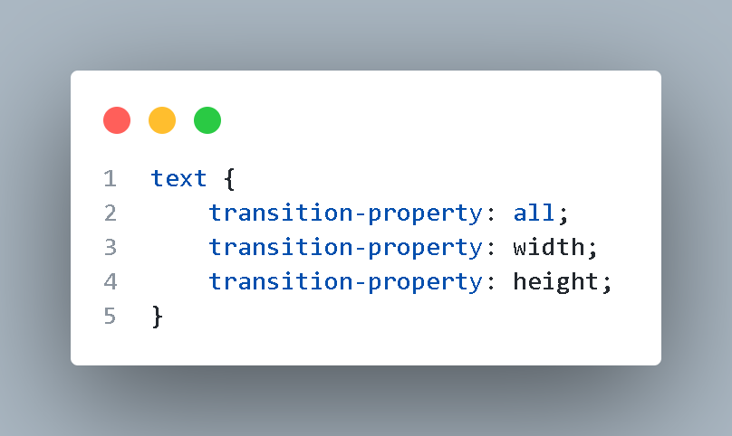
Here you can see how to set transition property to element. If you want
all properties to have transition effect, just set transition-property: all;.
Transition duration
Transition-duration is a CSS property that specifies the duration over which a CSS transition
should occur. This property takes a value in seconds (s) and milliseconds (ms).
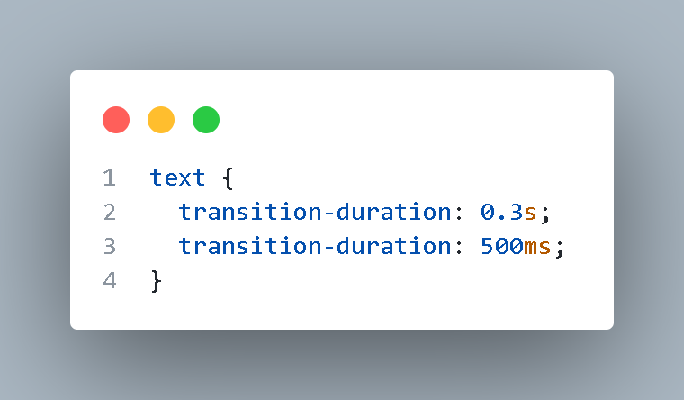
Here you can see how we added transition-duration property to text element.
Transition timing function
The transition-timing-function property in CSS specifies the speed curve of an element's transition
over time.
It determines how intermediate values are calculated for a transition between two states, such as changing the
color or position of an element.
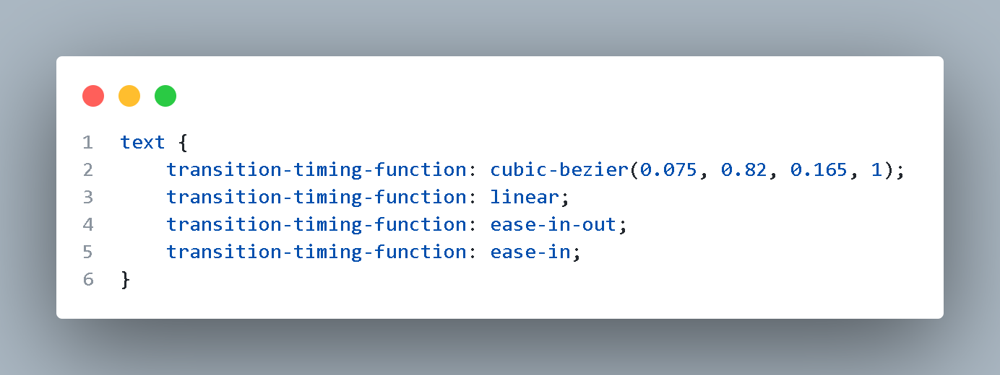
This cubic-bezier() curve creates a transition effect that starts slowly, speeds up quickly, and
then slows down again at the end.
Transition delay
The transition-delay property in CSS is used to specify the amount of time to wait before starting
a CSS transition effect. This property can be used in combination with the transition-duration,
transition-property, and transition-timing-function properties to create more complex
transition effects.
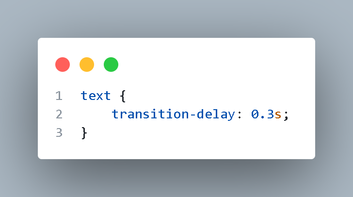
In this code we set transition-delay on text element which means that animation will
run after 0.3s.
Don't write all of that code!
When you work with transitions, you don't need to write all properties because it will take more time for site
to
response, but we don't need that because project need to be fast.
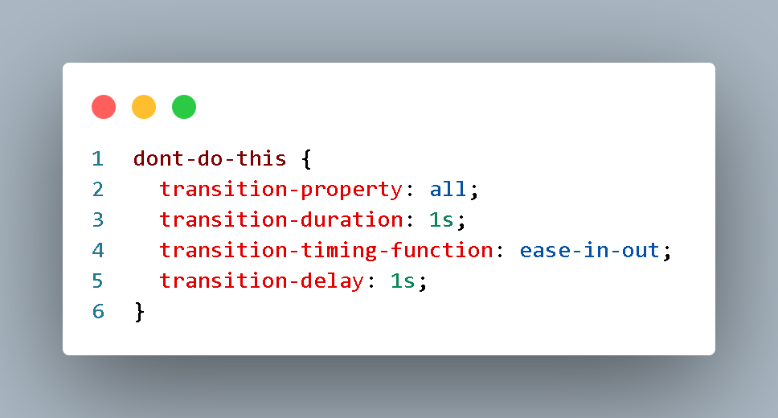
This is the example of bad code. Waste of time and site will probably become slower.
Instead, do this!
As we said, speed of site is important. Code below will show you how you can write previous code in lot easier
way.
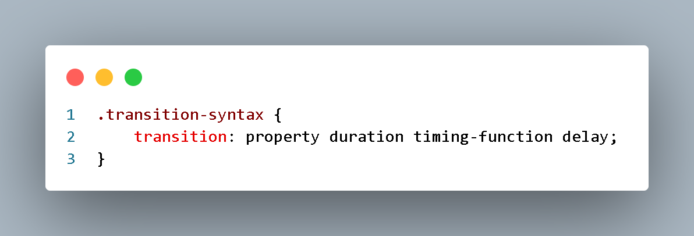
This code is syntax for transition effect. You need to declare properties in this order!
How to set transition on linear-gradient?
The linear-gradient function in CSS is used to create a gradient effect that transitions between two or more
colors in a linear direction. This function can be used to create a variety of effects, such as color fades,
background gradients, and more. But how can we set transition on it?
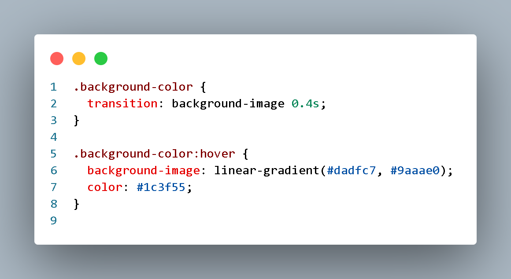
This code don't work. That is exactly what we made in previous example with hover square.
Solution for that problem is little tricky but you will learn something new.
Full code for solution
Code below is solution for linear-gradient transition. Don't worry, we will explain every line of
code later.
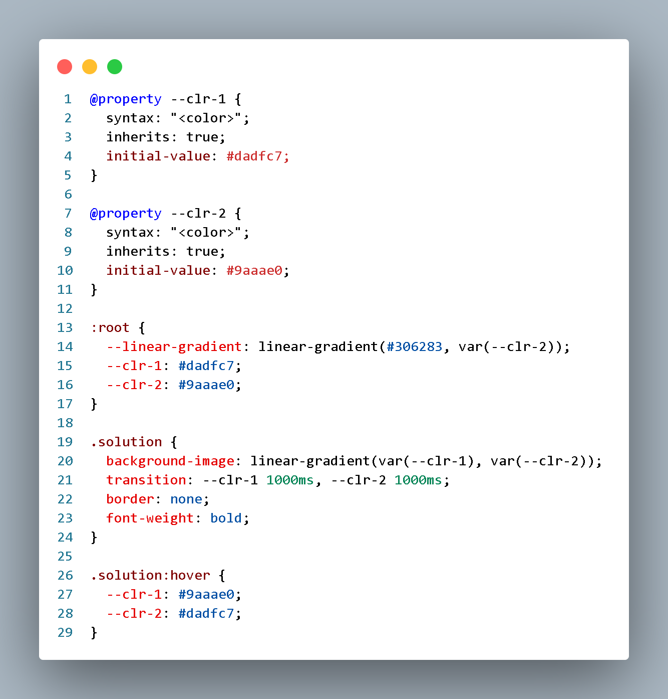
:root pseudo class
Firstly, let's talk about :root pseudo-class. :root is a pseudo-class in CSS that
matches the root element of a document, which is usually the
html element. It can be used to define global CSS variables, which can be used throughout the
entire document.
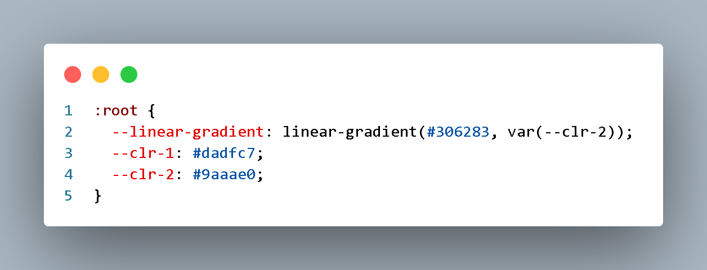
Here you can see that we declared --linear-gradient, --clr-1 and
--clr-2 as global variables. You can set those variables with var() function on
every element you want. When you change value in :root, it will change in every element with
var() function.
@property at-rule
We came to important thing if you want linear-gradient transition to work. The
@property at-rule in
CSS is used to define custom properties, also known as CSS variables. Custom properties allow you to define
values that can be reused throughout your CSS code, making it easier to maintain and update your styles.
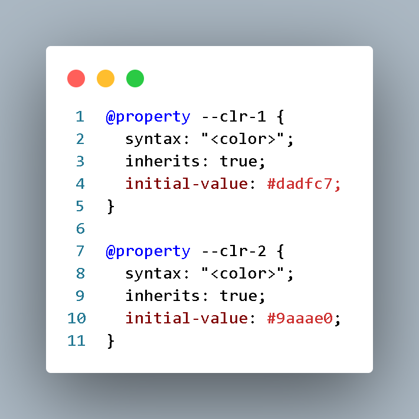
With @property at-rule, you can set linear-gradient colors to be animatable.
Background-image is not animatable property! Syntax is set to color
because browser can now recognize --clr-1 and --clr-2 as colors. The
initial-value property sets the default value for the properties. In this case, default values is
colors from linear-gradient.
Final steps
Here we need to set transition property with our custom properties and we need
transition-timing-function for each, in this example we set 1000ms.
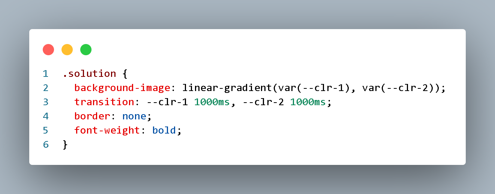
For last thing, we need to set :hover to make transition on hover.
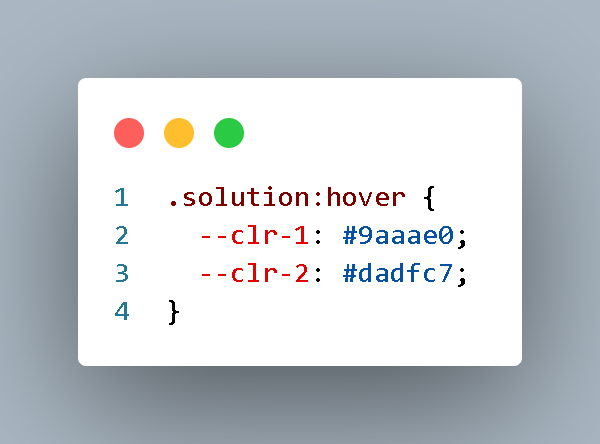
And voila! We now have our linear-gradient transition! Little complex but worth it.
That's it for transitions! Click button below to go onto next tutorial!